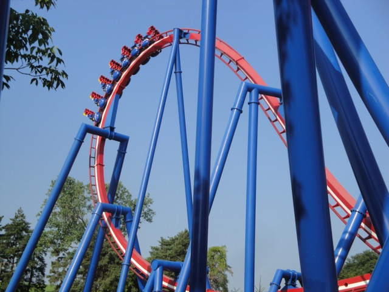
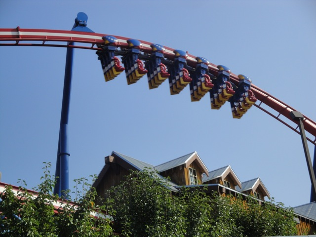
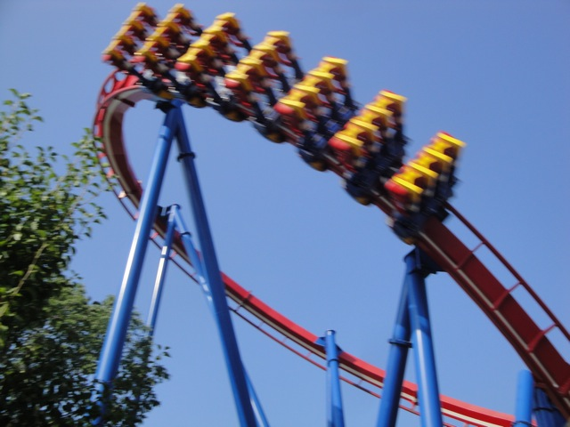
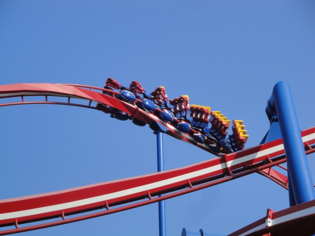
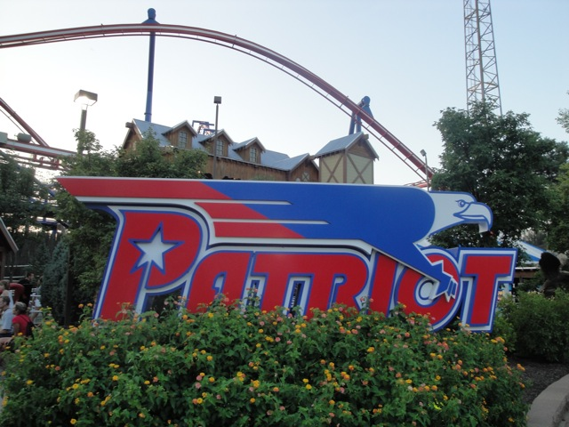
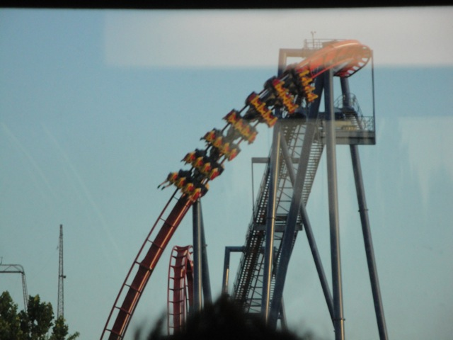

| |
Patriot Review

We're here at Worlds of Fun. After getting in the typical B&M seats, the floor drops and we're off. We begin to climb the lifthill. As you climb the lifthill, you get a great view of the freeway and of Kansas City in general to your left. And to your right, you get a decent view of Worlds of Fun. But views be damned!!! We have a roller coaster to ride!!! We then twist down the first drop. It's a nice first drop and gives the ride some speed. It's not insane or anything, but hey. It's still got some good speed. After that, we head up into a vertical loop. It's not an insane vertical loop or anything like that. There aren't any crazy positive Gs or anything like that, but it's still a fun vertical loop that we smoothly navigate. Afterwards, we head up into a Zero G Roll. All right. Now on most rides, the Zero G Roll is where we get some of the craziest moments of the ride. While most rides aren't as insane as Kumba or Montu, they at least have a nice whip to them. Well not Patriot!!! This thing has absolutely no whip in it at all whatsoever. We just glide through it with no sweat and no problem. Now I have heard some people praise this for Zero G Roll for it's smoothness. And it's true, it's smooth as glass. Though really, a Zero G Roll is nothing without a whip. F*ck smoothness!!! But that's just my opinion. After the heartline spin, we head into an immelman loop. While not particuarly forceful or insane, it does have a nice swooping feeling to it. Gee, does this sound like any other B&M Invert I've ridden? Yep. This is just like Talon at Dorney Park, which if you've read my review, know is not a very forceful B&M Invert. Not a forceful one at all. SO yeah. As you can guess, Patriot is not a forceful ride, nor is it one of my favorite rides. Now for Patriot, the ride reviews themselves are pretty mixed. It doesn't really get talked about much when discussing B&M Inverts, and when it does, while some call it amazing and overrate it the same way they overrate Talon, others have a more accurate review of the ride. After you swoop out of the immelman, you head straight into a big swooping turn. And as you can tell, it's very swoopy. After that big swooping turnaround, we go through a small little bunny hop. Now while not insane or anything, it does have some mild floater air. And that's always fun. However, after the floater air, we dip down to the ground, gain some speed, and then just head through a corkscrew. Now give the ride credit here. That was really cool. The drop out of the bunny hop is unexpected and the corkscrew does have a good whip to it. And then we go through a small turn that really has some good Gs. This section of the ride right here is what I like to call the Silver Bullet Helix Section. It's the section of a less forceful (I won't say forceless) B&M Invert where the ride breifly really picks up. While you obviously tell that this happens in Silver Bullet's helix, this is where it happens on Patriot. So I don't just bad-mouth Patriot just because. I recognize it's good moments too. However, after that, all thats left is a small dip that just leads us straight to the brake run. While I admit that Patriot is a good ride and very fun to ride, it's far from the best of the B&M Invert Line Up. But I'd still give it a ride if at Worlds of Fun. It may not be amazing or anything, but you will have a lot of fun. Guaranteed.
7/10
Location: Worlds of Fun
Opened: 2006
Built by: B&M
Last Ridden: August 7, 2010
Patriot Photos





|